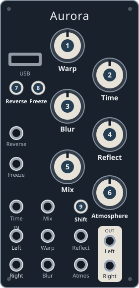

Tempest
By jfriess · Project details
Stereo distortion with a clean low-frequency bypass. Mix is not dry/wet.
Latest supported: 1.1.0rc1 (prerelease). It reworks Odd mode and settings-save
handling; controls remain the same. Keep only the desired Tempest version in
aurora/, since both versions use red in the selector.

Knobs and CV
| Panel knob / CV | Function |
|---|---|
| 1 Warp | Drive, 1–100× |
| 2 Time | Pre-distortion high-pass, 20 Hz–2 kHz |
| 3 Blur | Algorithm variation |
| 4 Reflect | Bipolar bias; center deadzone; reduced range in Standard mode |
| 5 Mix | Crossover, 20–500 Hz |
| 6 Atmosphere | Post-distortion low-pass, 20 Hz–20 kHz |
| 95 Shift + Mix | Output trim, 0–2× |
Buttons and gates
| Control | Function |
|---|---|
| 7 Reverse | Next algorithm |
| 8 Freeze | Previous algorithm |
| 97 Shift + Reverse | Next bank |
| 98 Shift + Freeze | Standard green → tube orange → odd/inharmonic purple |
| 89 Freeze, hold 5 seconds without Shift | Toggle cabinet simulation; three white blinks |
| 8 Freeze gate | Hold an input sample |
| 7 Reverse gate | Octave-up rectification |
Details & sources
- CVs add to knobs (±5 V).
- Reverse LED: bank; Freeze: mode; arc: algorithm/distortion level.
- Settings autosave after two seconds without changes.
| Bank / running color | Algorithms, in order |
|---|---|
| Analog / Orange | SftClp, HardClp, StrgrC, Valve, Antipol, Disto |
| Fold / Purple | WavFld, Crest, Sstrgi, Fezz, Fuss, Cross |
| Geometric / Yellow | VariWS, SmartE, Vshpe, Square, Cubic, Anti+ |
| LoFi / Cyan | Bitcrsh, DwnSpl, Lowfi, Lowrfi, ChastB, SuspB |
| Chaos / Red | Fractl, Zippy, Bounce, NoizE, BrwnNz, Attrac |
| Temporal / Green | Filter, TimeFr, Vinyl, Clicks, Jelly, Accum |
Sources: version-pinned controls
and algorithm details.